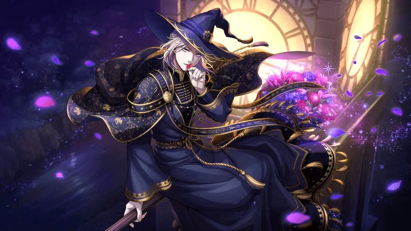

01twst
Twisted Wonderland


（拡大表示）- Love
- ヴィル・シェーンハイト
- Like
- リドル・ローズハート / エース・トラッポラ
5周年をきっかけに戻ってきた出戻り勢です ୨୧
ヴィルさんを中心に作品全体を楽しんでいます ♡
ヴィルさんに夢思考はありませんが、ヴィルさんの夢関連のものを見ることが苦手なため、夢思考をお持ちの方とのお繋がりは控えています。
夢思考のない同担さんは大歓迎です！ 一緒に魅力を共有できたら嬉しいです ♡
ヴィルさん以外のキャラクターには、ゆるく夢思考を持つことがあります。
- 履修状況：本編読了済み
- 微課金勢